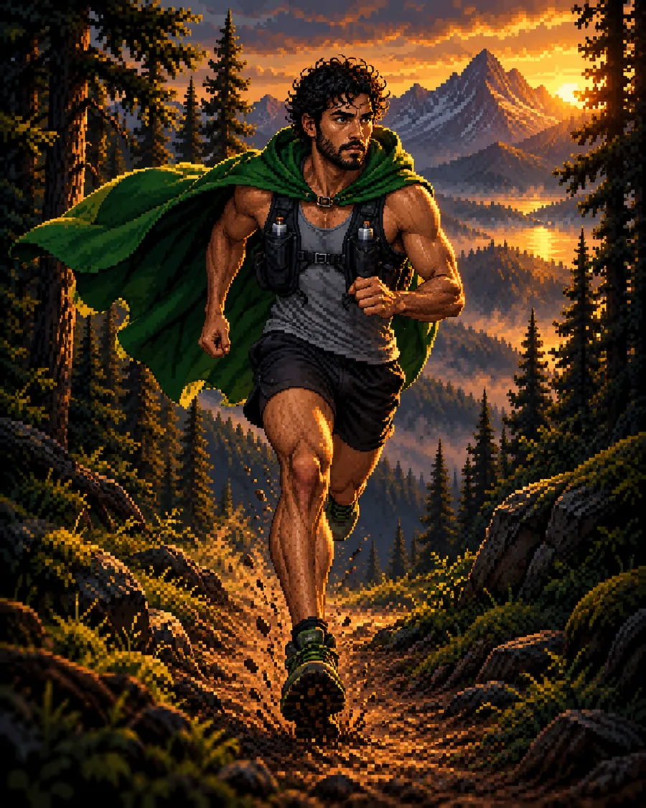

Um treinador de IA no bolso
O Coach faz uma entrevista rápida (objetivo, nível, dias, onde você treina) e monta o plano. Depois acompanha cada série, compara com o treino anterior e revisa a ficha toda semana.
Um coach de IA que monta o seu treino de academia, calistenia, corrida ou cross, acompanha cada série e transforma a sua constância em XP, níveis e conquistas.
O Coach faz uma entrevista rápida (objetivo, nível, dias, onde você treina) e monta o plano. Depois acompanha cada série, compara com o treino anterior e revisa a ficha toda semana.
Cada treino, recorde, meta de água e semana batida vale XP. Você sobe de nível, troca de classe (de Recruta a Imortal) e se forma em cada etapa da trilha.
Monte um grupo com os amigos, veja quem treinou hoje e dispute o ranking de XP. Cole o link de um reel e o Coach transforma o vídeo no desafio da semana.

Comece pelo plano que cabe na sua rotina e troque quando quiser.
R$[preencher]/mês
Para treinar sozinho, com o Coach do seu lado.
Mais escolhido
R$[preencher]/mês
Todas as trilhas e o Coach montando cada fase.
R$[preencher]/mês
O Completo com desconto, em 12 meses.
Um exemplo de semana do programa Corrida e Híbrido: o Coach mistura corrida e força nos dias que você escolheu e ajusta tudo pela sua evolução.
Não. O FIT.AI abre no navegador do celular ou do computador. Você entra com o Google ou com e-mail e senha, e os treinos ficam salvos na sua conta, em qualquer aparelho.
Ele faz uma entrevista curta no chat (objetivo, nível, dias, tempo, onde você treina e se tem alguma dor) e monta o plano com exercícios do catálogo, cada um com dica de execução. Toda semana ele revisa com base no que você registrou.
Mande o print da corrida, da pedalada ou da caminhada (Strava, Garmin, Nike Run, relógio ou esteira). A IA lê distância, tempo e ritmo, você confere e a atividade vira treino e XP.
Serve. Tire uma foto do quadro e o FIT.AI lança o WOD do dia, com cronômetro de For Time, AMRAP, EMOM e Tabata, resultado RX ou Scaled e os seus PRs.
Os treinos aparecem para o seu grupo só se você entrar em um. As fotos de evolução corporal ficam só com você.
Abra o app, escolha a sua trilha e responda às perguntas do Coach. Em dois minutos o seu plano está pronto.